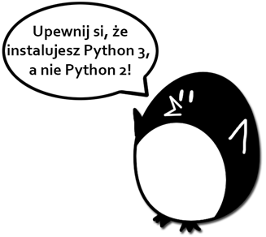
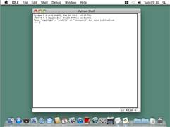
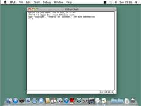

|
|
Rozdział 1 |
Instalacja Pythona |

Rzeczy omówione w tym rozdziale:
· Pobranie i instalacja interpertera Pythona
· Jak używać tej książki?
· Strona WWW: http://inventwithpython.com/pl
Cześć! Ta książka nauczyła Cię jak programować przez tworzenie gier komputerowych. Ja nauczysz się jak działają gry z tej książki, to będziesz mógł tworzyć własne gry. Wszystko czego potrzebujesz to komputer, oprogramowanie nazywane interpreterem Pythona i ta książka. Interpreter Pythona jest darmowy i można go pobrać z internetu.
Kiedy byłem dzieckiem książki jak ta nauczyły mnie jak pisać pierwsze programy i gry. To było zabawne i łatwe. Teraz, jako dorosłego nadal bawi mnie programowanie i jeszcze mi za to płacą. Nawet jeśli nie zostaniesz programistą gdy dorośniesz, to programowanie jest przydatną i dającą radość umiejętnością.
Komputery są niesamowitymi maszynami, a nauczenie się ich programowania jest łatwe. Jeśli możecz czytać tę książkę, to możesz programować komputery. Program komputerowy to zestaw instrukcji które komputer może zrozumieć, tak jak opowieść to zestaw zdań zrozumiałych przez czytelnika. Gry komputerowe są także programami komputerowymi i także składają się z instrukcji.
Aby kierować komputerem piszesz program w języku jaki komputer może zrozumieć. Ta książka uczy programowania w języku nazywającym się Python. Są także inne języki programowania jak BASIC, Java, JavaScript, PHO, czy C++.
W czasach mojego dzieciństwa najczęściej BASIC był pierwszym językiem którego się uczono. Jednakże od tego czasu wymyślono nowe języki, takie jak Python. Python jest nawet ławiejszy do nauczenia, niż BASIC! I jednocześnie jest poważnym językiem używanym przez zawodowych programistów. Wielu dorosłych używa Pythona w swej pracy, albo dla zabawy.
Gry jakie stworzysz z tą książką wyglądają na proste w porównaniu do gier na XBox, Playstation, czy Wii. Nie mają one wymyślnej grafiki ponieważ mają służyć nauce podstaw programowania. Prostota jest celowa i dzięki niej możesz skupić się na nauce programowania. Zresztą gry nie muszą być skomplikowane by dawać frajdę.
Pobieranie i instalacja Pythona
Musisz pobrać oprogramowania zwane interpreter Pythona. Ten interpreter rozumie instrukcje które napiszesz w języku Python. Od teraz “interpreter Pythona” będziemy nazywali “Pythonem”.
Ważna uwaga! Upewnij się, że instalujesz Pythona 3, a nie Pythona 2. Programy w tej książce używają Pythona 3 i uzyskasz błędy jeśli spróbujesz je uruchomić Pythonem 2. Jest to tak ważne, że na rysunku 1-1 dodałem rysunkowego pingwina by Ci to powiedział i byś tego nie przeoczył.

Rysunek 1-1: Absurdalny pingwin mówiący byś zainstalował Pythona 3.
On Windows, download the Python installer (the filename will end with .msi) and double-click it. Follow the instructions the installer displays on the screen to install Python, as listed here:
1. Select Install for All Users and then click Next.
2. Install to the C:\Python34 folder by clicking Next.
3. Click Next to skip the Customize Python section.
On Mac OS X, download the .dmg file that’s right for your version of OS X from the website and double-click it. Follow the instructions the installer displays on the screen to install Python, as listed here:
1. When the DMG package opens in a new window, double-click the Python.mpkg file. You may have to enter the administrator password.
2. Click Continue through the Welcome section and click Agree to accept the license.
3. Select HD Macintosh (or whatever name your hard drive has) and click Install.
If you’re running Ubuntu, you can install Python from the Ubuntu Software Center by following these steps:
1. Open the Ubuntu Software Center.
2. Type Python in the search box in the top-right corner of the window.
3. Select IDLE (using Python 3.4), or whatever is the latest version.
4. Click Install. You may have to enter the administrator password to complete the installation.
Uruchamianie IDLE
IDLE to skrót od angielskich słów Interactive DeveLopment Environment, co po polsku znaczy Interaktywne środowisko programistyczne. Te środowisko jest jak edytor tekstu do pisania programów w Pythonie. Uruchamianie IDLE wygląda różnie na różnych systemach operacyjnych.
W Windows naciśnik przycisk Start w dolnym lewym rogu, wpisz “IDLE” i wybierz IDLE (Python GUI).
W Mac OS X, otwórz okno Szukacz i kliknij w Aplikacje. Następnie kliknij Python 3.4. A potem kliknij w ikonę IDLE.
Na Ubuntu lub innej dystrybucji Linuxa, otwórz okno terminala i wpisz “idle3”. Możesz takkże kliknąć w Aplikacje ina górze ekranu. I wtedy kliknij Programowanie i IDLE 3.
Okno jakie otwiera się gdy pierwszy raz uruchomisz IDLE to interaktywna powłoka (“shell” w języku angielskim). Możesz w niej wpisywać instrukcje Pythona, a Python je wykona, a po ich wykonaniu wyświetli ich wyniki również w interaktywniej powłoce.
 
 
Rysunek 1-2: Interaktywna powłoka programu IDLE na Windows, OS X i Linux Ubuntu.
Jak używać tej książki
Większość rozdziałów tej książki rozpocznie się przykładowym uruchomieniem omawianego programu. Pokazuje to jak program wygląda, gdy go uruchomiesz. To, co wpisuje użytkownik jest pokazane pogrubionym tekstem.
Lepiej wpisuj samodzielnie kody programów w edytorze IDLE, niż pobieraj je z internetu. Lepiej zapamiętasz programowanie, gdy samodzielnie wpiszesz kody.
Numery linii i spacje
Nie wpisuj numerów linii które pojawiają się na początku każdej linii kodów źródłowych. Na przykład gdy zobaczysz:
9. tajemnaLiczba = random.randint(1, 20)
To nie wpisuj “9.” które jest po lewej stronie, ani pojedynczej spacji która jest obok. Wpisz to tak:
tajemnaLiczba = random.randint(1, 20)
Te numery linii są tylko po to, by omawiając program móc odnieść się do wskazanej linii. Nie są one częścią programu.
Poza tymi numerami wpisz kod dokładnie tak, jak go widzisz. Zwróć uwagę na to, że niektóre linie są wcięte za pomocą czterech, lub ośmiu spacje. Każdy znak w IDLE jest tej samej szerokości. Policz ilość spacji licząc znaki w linii sąsiadującej z góry, lub z dołu.
Na przykład spacje tworzące wcięcia są tu oznaczone ▪, znakiem czarnego prostokątu:
while probyZgadniecia < 10:
▪▪▪▪if tajemnaLiczba == 42:
▪▪▪▪▪▪▪▪print('Hej')
Zawijanie tekstu w tej książce
Niektóre linie kodu są zbyt długie, by zmieścić się w jednej na stronie i będą zawijane do następnej linii. Wprowadź ten kod cały, w jednej linii bez naciskania Enter. Będziesz wiedział, czy nowa linia się zaczęła dzięki numerom linii jakie pojawiają się po lewej stronie kodu. Na przykład poniższy kod ma tylko dwie linie kodu:
1. print('To jest pierwsza linia! xxxxxxxxxxxxxxxxxxxxxxxxxxxxxxxxxxxxxxxxxxxxx
xxxxxxxxxxxx')
2. print('A to druga linia, a nie trzecia.')
Pierwsza linia została zawinięta i wygląda jakby kod miał trzy linie. Dzieje się tak gdyż strony książki nie są wystarczająco szerokie by zmieścić pierwszą linię kodu.
Pomoc Online
Strona WWW tej książki: http://inventwithpython.com/pl. Możesz tu znaleźć kilka zasobów związanych z książką. Kilka linków w tej książce używa domeny invpy.co, by adresy był krótszy.
Pamiętaj, że są sprytne sposoby by zapytać innych w sposób taki, że pomaga się innym dać odpowiedź. Upewnij się, że przeczytałeś sekcję Często Zadawane Pytania FAQ - Frequently Asked Questions) na temat prawidłowego sposobu zadawania pytań na powyższych stronach. Kiedy zadajesz pytanie programistyczne zrób co następuje:
· Jeśli przy wpisywaniu programów z tej książki dostajesz błedy, to najpierw sprawdź, czy nie są to literówki używając porównywania z: http://invpy.com/pl/diff. Skopiuj i wklej swój kod do tego narządzia by zobaczyć wszelkie różnice między nim, a kodem z książki.
· Wytłumacz co próbujesz zrobić gdy tłumaczysz błąd. Osobie chcącej pomóc pozwoli to ocenić, czy całkowicie się nie pomyliłeś.
· Skopiuj i wklej cały kod i cały komunikat o błędzie.
· Poszukaj w internecie czy ktoś już nie zapytał (i odpowiedział) na takie pytanie.
· Opis co już wypróbowałeś by rozwiązać problem. To pokaże, że włożyłeś w rozwiązanie nieco wysiłku.
· Bądź uprzejmy. Nie żądaj pomocy, ani nie naciskaj na pomagających, by odpowiadali natychmiast.
Prosząc kogoś, “Dlaczego nie jest mój program działa?”, Nie mówi im nic. Powiedz im, co chce zrobić, dokładny błąd otrzymujesz, a system operacyjny i jego wersja.